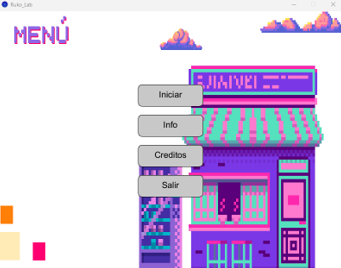
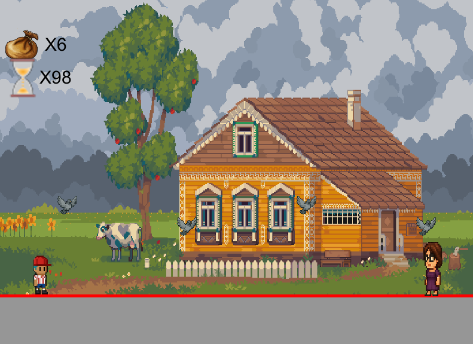
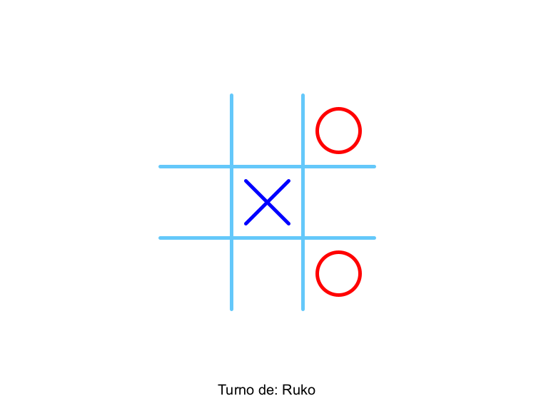
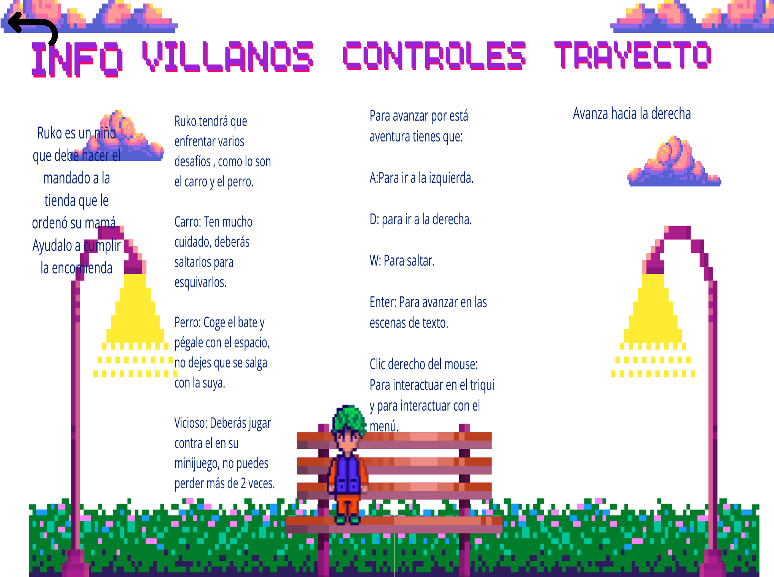

Descripción del Proyecto
“Ruko y su Mandado” es un juego de aventura donde controlas a Ruko, un niño que debe cumplir una misión enfrentando obstáculos y enemigos. El juego incluye:
- Gráficos estilo pixel art
- Niveles con dificultad progresiva
- Sistema de vidas y enemigos dinámicos
- Minijuego de Tres en Raya integrado
Galería




Detalles Técnicos
Lenguaje: Processing (Java)
Plataforma: Desktop (Windows/Linux/Mac)
Proyecto: Desarrollo completo con backend (lógica) y frontend (UI, menús).
Documentación: Informe PDF con detalles de implementación y diseño.